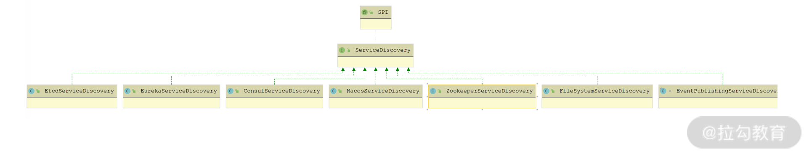
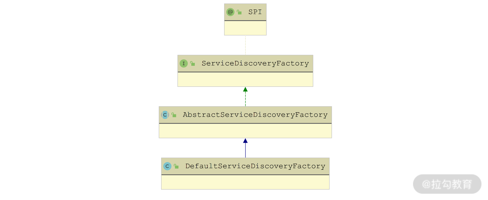
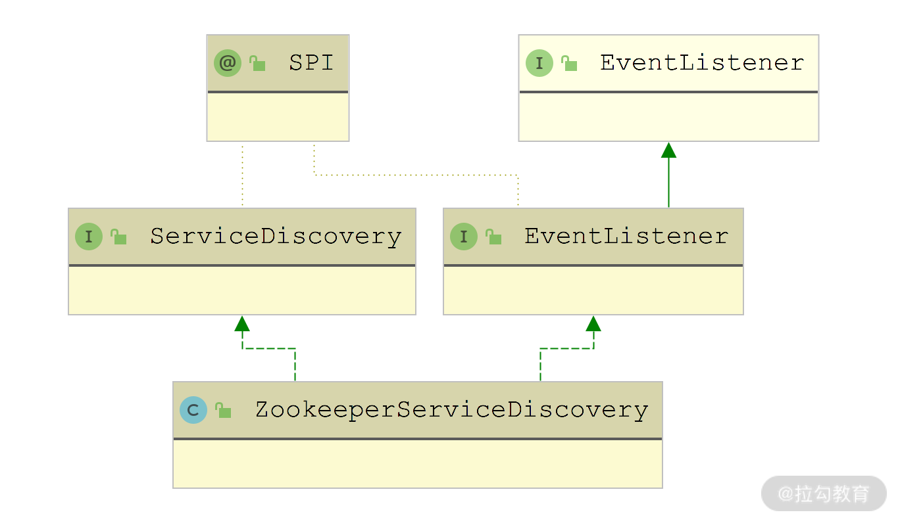
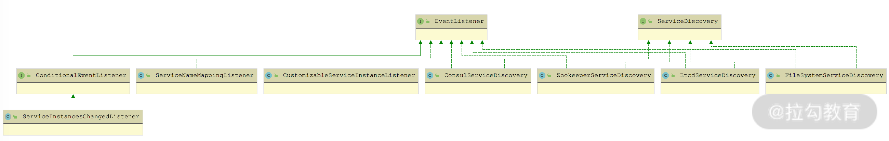
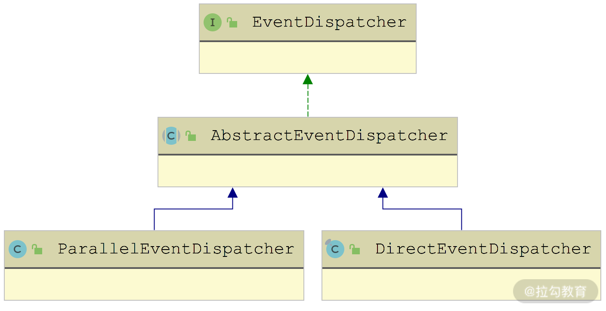

- 00 开篇词 深入掌握 Dubbo 原理与实现，提升你的职场竞争力.md
- 01 Dubbo 源码环境搭建：千里之行，始于足下.md
- 02 Dubbo 的配置总线：抓住 URL，就理解了半个 Dubbo.md
- 03 Dubbo SPI 精析，接口实现两极反转（上）.md
- 04 Dubbo SPI 精析，接口实现两极反转（下）.md
- 05 海量定时任务，一个时间轮搞定.md
- 06 ZooKeeper 与 Curator，求你别用 ZkClient 了（上）.md
- 07 ZooKeeper 与 Curator，求你别用 ZkClient 了（下）.md
- 08 代理模式与常见实现.md
- 09 Netty 入门，用它做网络编程都说好（上）.md
- 10 Netty 入门，用它做网络编程都说好（下）.md
- 11 简易版 RPC 框架实现（上）.md
- 12 简易版 RPC 框架实现（下）.md
- 13 本地缓存：降低 ZooKeeper 压力的一个常用手段.md
- 14 重试机制是网络操作的基本保证.md
- 15 ZooKeeper 注册中心实现，官方推荐注册中心实践.md
- 16 Dubbo Serialize 层：多种序列化算法，总有一款适合你.md
- 17 Dubbo Remoting 层核心接口分析：这居然是一套兼容所有 NIO 框架的设计？.md
- 18 Buffer 缓冲区：我们不生产数据，我们只是数据的搬运工.md
- 19 Transporter 层核心实现：编解码与线程模型一文打尽（上）.md
- 20 Transporter 层核心实现：编解码与线程模型一文打尽（下）.md
- 21 Exchange 层剖析：彻底搞懂 Request-Response 模型（上）.md
- 22 Exchange 层剖析：彻底搞懂 Request-Response 模型（下）.md
- 23 核心接口介绍，RPC 层骨架梳理.md
- 24 从 Protocol 起手，看服务暴露和服务引用的全流程（上）.md
- 25 从 Protocol 起手，看服务暴露和服务引用的全流程（下）.md
- 26 加餐：直击 Dubbo “心脏”，带你一起探秘 Invoker（上）.md
- 27 加餐：直击 Dubbo “心脏”，带你一起探秘 Invoker（下）.md
- 28 复杂问题简单化，代理帮你隐藏了多少底层细节？.md
- 29 加餐：HTTP 协议 + JSON-RPC，Dubbo 跨语言就是如此简单.md
- 30 Filter 接口，扩展 Dubbo 框架的常用手段指北.md
- 31 加餐：深潜 Directory 实现，探秘服务目录玄机.md
- 32 路由机制：请求到底怎么走，它说了算（上）.md
- 33 路由机制：请求到底怎么走，它说了算（下）.md
- 34 加餐：初探 Dubbo 动态配置的那些事儿.md
- 35 负载均衡：公平公正物尽其用的负载均衡策略，这里都有（上）.md
- 36 负载均衡：公平公正物尽其用的负载均衡策略，这里都有（下）.md
- 37 集群容错：一个好汉三个帮（上）.md
- 38 集群容错：一个好汉三个帮（下）.md
- 39 加餐：多个返回值不用怕，Merger 合并器来帮忙.md
- 40 加餐：模拟远程调用，Mock 机制帮你搞定.md
- 41 加餐：一键通关服务发布全流程.md
- 42 加餐：服务引用流程全解析.md
- 43 服务自省设计方案：新版本新方案.md
- 44 元数据方案深度剖析，如何避免注册中心数据量膨胀？.md
- 45 加餐：深入服务自省方案中的服务发布订阅（上）.md
- 46 加餐：深入服务自省方案中的服务发布订阅（下）.md
- 47 配置中心设计与实现：集中化配置 and 本地化配置，我都要（上）.md
- 48 配置中心设计与实现：集中化配置 and 本地化配置，我都要（下）.md
- 49 结束语 认真学习，缩小差距.md
45 加餐：深入服务自省方案中的服务发布订阅（上）
在前面[第 43 课时]中介绍 Dubbo 的服务自省方案时，我们可以看到除了需要元数据方案的支持之外，还需要服务发布订阅功能的支持，这样才能构成完整的服务自省架构。
本课时我们就来讲解一下 Dubbo 中服务实例的发布与订阅功能的具体实现：首先说明 ServiceDiscovery 接口的核心定义，然后再重点介绍以 ZooKeeper 为注册中心的 ZookeeperServiceDiscovery 实现，这其中还会涉及相关事件监听的实现。
ServiceDiscovery 接口
ServiceDiscovery 主要封装了针对 ServiceInstance 的发布和订阅操作，你可以暂时将其理解成一个 ServiceInstance 的注册中心。ServiceDiscovery 接口的定义如下所示：
@SPI("zookeeper")
public interface ServiceDiscovery extends Prioritized {
// 初始化当前ServiceDiscovery实例，传入的是注册中心的URL
void initialize(URL registryURL) throws Exception;
// 销毁当前ServiceDiscovery实例
void destroy() throws Exception;
// 发布传入的ServiceInstance实例
void register(ServiceInstance serviceInstance) throws RuntimeException;
// 更新传入的ServiceInstance实例
void update(ServiceInstance serviceInstance) throws RuntimeException;
// 注销传入的ServiceInstance实例
void unregister(ServiceInstance serviceInstance) throws RuntimeException;
// 查询全部Service Name
Set<String> getServices();
// 分页查询时默认每页的条数
default int getDefaultPageSize() {
return 100;
}
// 根据ServiceName分页查询ServiceInstance
default List<ServiceInstance> getInstances(String serviceName) throws NullPointerException {
List<ServiceInstance> allInstances = new LinkedList<>();
int offset = 0;
int pageSize = getDefaultPageSize();
// 分页查询ServiceInstance
Page<ServiceInstance> page = getInstances(serviceName, offset, pageSize);
allInstances.addAll(page.getData());
while (page.hasNext()) {
offset += page.getDataSize();
page = getInstances(serviceName, offset, pageSize);
allInstances.addAll(page.getData());
}
return unmodifiableList(allInstances);
}
default Page<ServiceInstance> getInstances(String serviceName, int offset, int pageSize) throws NullPointerException,
IllegalArgumentException {
return getInstances(serviceName, offset, pageSize, false);
}
default Page<ServiceInstance> getInstances(String serviceName, int offset, int pageSize, boolean healthyOnly) throws
NullPointerException, IllegalArgumentException, UnsupportedOperationException {
throw new UnsupportedOperationException("Current implementation does not support pagination query method.");
}
default Map<String, Page<ServiceInstance>> getInstances(Iterable<String> serviceNames, int offset, int requestSize) throws
NullPointerException, IllegalArgumentException {
Map<String, Page<ServiceInstance>> instances = new LinkedHashMap<>();
for (String serviceName : serviceNames) {
instances.put(serviceName, getInstances(serviceName, offset, requestSize));
}
return unmodifiableMap(instances);
}
// 添加ServiceInstance监听器
default void addServiceInstancesChangedListener(ServiceInstancesChangedListener listener)
throws NullPointerException, IllegalArgumentException {
}
// 触发ServiceInstancesChangedEvent事件
default void dispatchServiceInstancesChangedEvent(String serviceName) {
dispatchServiceInstancesChangedEvent(serviceName, getInstances(serviceName));
}
default void dispatchServiceInstancesChangedEvent(String serviceName, String... otherServiceNames) {
dispatchServiceInstancesChangedEvent(serviceName, getInstances(serviceName));
if (otherServiceNames != null) {
Stream.of(otherServiceNames)
.filter(StringUtils::isNotEmpty)
.forEach(this::dispatchServiceInstancesChangedEvent);
}
}
default void dispatchServiceInstancesChangedEvent(String serviceName, Collection<ServiceInstance> serviceInstances) {
dispatchServiceInstancesChangedEvent(new ServiceInstancesChangedEvent(serviceName, serviceInstances));
}
default void dispatchServiceInstancesChangedEvent(ServiceInstancesChangedEvent event) {
getDefaultExtension().dispatch(event);
}
}
ServiceDiscovery 接口被 @SPI 注解修饰，是一个扩展点，针对不同的注册中心，有不同的 ServiceDiscovery 实现，如下图所示：

ServiceDiscovery 继承关系图
在 Dubbo 创建 ServiceDiscovery 对象的时候，会通过 ServiceDiscoveryFactory 工厂类进行创建。ServiceDiscoveryFactory 接口也是一个扩展接口，Dubbo 只提供了一个默认实现—— DefaultServiceDiscoveryFactory，其继承关系如下图所示：

ServiceDiscoveryFactory 继承关系图
在 AbstractServiceDiscoveryFactory 中维护了一个 ConcurrentMap
public ServiceDiscovery getServiceDiscovery(URL registryURL) {
String key = registryURL.toServiceStringWithoutResolving();
return discoveries.computeIfAbsent(key, k -> createDiscovery(registryURL));
}
在 DefaultServiceDiscoveryFactory 中会实现 createDiscovery() 方法，使用 Dubbo SPI 机制获取对应的 ServiceDiscovery 对象，具体实现如下：
protected ServiceDiscovery createDiscovery(URL registryURL) {
String protocol = registryURL.getProtocol();
ExtensionLoader<ServiceDiscovery> loader = getExtensionLoader(ServiceDiscovery.class);
return loader.getExtension(protocol);
}
ZookeeperServiceDiscovery 实现分析
Dubbo 提供了多个 ServiceDiscovery 用来接入多种注册中心，下面我们以 ZookeeperServiceDiscovery 为例介绍 Dubbo 是如何接入 ZooKeeper 作为注册中心，实现服务实例发布和订阅的。
在 ZookeeperServiceDiscovery 中封装了一个 Apache Curator 中的 ServiceDiscovery 对象来实现与 ZooKeeper 的交互。在 initialize() 方法中会初始化 CuratorFramework 以及 Curator ServiceDiscovery 对象，如下所示：
public void initialize(URL registryURL) throws Exception {
... // 省略初始化EventDispatcher的相关逻辑
// 初始化CuratorFramework
this.curatorFramework = buildCuratorFramework(registryURL);
// 确定rootPath，默认是"/services"
this.rootPath = ROOT_PATH.getParameterValue(registryURL);
// 初始化Curator ServiceDiscovery并启动
this.serviceDiscovery = buildServiceDiscovery(curatorFramework, rootPath);
this.serviceDiscovery.start();
}
在 ZookeeperServiceDiscovery 中的方法基本都是调用 Curator ServiceDiscovery 对象的相应方法实现，例如，register()、update() 、unregister() 方法都会调用 Curator ServiceDiscovery 对象的相应方法完成 ServiceInstance 的添加、更新和删除。这里我们以 register() 方法为例：
public void register(ServiceInstance serviceInstance) throws RuntimeException {
doInServiceRegistry(serviceDiscovery -> {
serviceDiscovery.registerService(build(serviceInstance));
});
}
// 在build()方法中会将Dubbo中的ServiceInstance对象转换成Curator中的ServiceInstance对象
public static org.apache.curator.x.discovery.ServiceInstance<ZookeeperInstance> build(ServiceInstance serviceInstance) {
ServiceInstanceBuilder builder = null;
// 获取Service Name
String serviceName = serviceInstance.getServiceName();
String host = serviceInstance.getHost();
int port = serviceInstance.getPort();
// 获取元数据
Map<String, String> metadata = serviceInstance.getMetadata();
// 生成的id格式是"host:ip"
String id = generateId(host, port);
// ZookeeperInstance是Curator ServiceInstance的payload
ZookeeperInstance zookeeperInstance = new ZookeeperInstance(null, serviceName, metadata);
builder = builder().id(id).name(serviceName).address(host).port(port)
.payload(zookeeperInstance);
return builder.build();
}
除了上述服务实例发布的功能之外，在服务实例订阅的时候，还会用到 ZookeeperServiceDiscovery 查询服务实例的信息，这些方法都是直接依赖 Apache Curator 实现的，例如，getServices() 方法会调用 Curator ServiceDiscovery 的 queryForNames() 方法查询 Service Name，getInstances() 方法会通过 Curator ServiceDiscovery 的 queryForInstances() 方法查询 Service Instance。
EventListener 接口
ZookeeperServiceDiscovery 除了实现了 ServiceDiscovery 接口之外，还实现了 EventListener 接口，如下图所示：

ZookeeperServiceDiscovery 继承关系图
也就是说，ZookeeperServiceDiscovery 本身也是 EventListener 实现，可以作为 EventListener 监听某些事件。下面我们先来看 Dubbo 中 EventListener 接口的定义，其中关注三个方法：onEvent() 方法、getPriority() 方法和 findEventType() 工具方法。
@SPI
@FunctionalInterface
public interface EventListener<E extends Event> extends java.util.EventListener, Prioritized {
// 当发生该EventListener对象关注的事件时，该EventListener的onEvent()方法会被调用
void onEvent(E event);
// 当前EventListener对象被调用的优先级
default int getPriority() {
return MIN_PRIORITY;
}
// 获取传入的EventListener对象监听何种Event事件
static Class<? extends Event> findEventType(EventListener<?> listener) {
return findEventType(listener.getClass());
}
static Class<? extends Event> findEventType(Class<?> listenerClass) {
Class<? extends Event> eventType = null;
// 检测传入listenerClass是否为Dubbo的EventListener接口实现
if (listenerClass != null && EventListener.class.isAssignableFrom(listenerClass)) {
eventType = findParameterizedTypes(listenerClass)
.stream()
.map(EventListener::findEventType) // 获取listenerClass中定义的Event泛型
.filter(Objects::nonNull)
.findAny()
// 获取listenerClass父类中定义的Event泛型
.orElse((Class) findEventType(listenerClass.getSuperclass()));
}
return eventType;
}
... // findEventType()方法用来过滤传入的parameterizedType是否为Event或Event子类(这里省略该方法的实现)
}
Dubbo 中有很多 EventListener 接口的实现，如下图所示：

EventListener 继承关系图
我们先来重点关注 ZookeeperServiceDiscovery 这个实现，在其 onEvent() 方法（以及 addServiceInstancesChangedListener() 方法）中会调用 registerServiceWatcher() 方法重新注册：
public void onEvent(ServiceInstancesChangedEvent event) {
// 发生ServiceInstancesChangedEvent事件的Service Name
String serviceName = event.getServiceName();
// 重新注册监听器
registerServiceWatcher(serviceName);
}
protected void registerServiceWatcher(String serviceName) {
// 构造要监听的path
String path = buildServicePath(serviceName);
// 创建监听器ZookeeperServiceDiscoveryChangeWatcher并记录到watcherCaches缓存中
CuratorWatcher watcher = watcherCaches.computeIfAbsent(path, key ->
new ZookeeperServiceDiscoveryChangeWatcher(this, serviceName));
// 在path上添加上面构造的ZookeeperServiceDiscoveryChangeWatcher监听器，
// 来监听子节点的变化
curatorFramework.getChildren().usingWatcher(watcher).forPath(path);
}
ZookeeperServiceDiscoveryChangeWatcher 是 ZookeeperServiceDiscovery 配套的 CuratorWatcher 实现，其中 process() 方法实现会关注 NodeChildrenChanged 事件和 NodeDataChanged 事件，并调用关联的 ZookeeperServiceDiscovery 对象的 dispatchServiceInstancesChangedEvent() 方法，具体实现如下：
public void process(WatchedEvent event) throws Exception {
// 获取监听到的事件类型
Watcher.Event.EventType eventType = event.getType();
// 这里只关注NodeChildrenChanged和NodeDataChanged两种事件类型
if (NodeChildrenChanged.equals(eventType) || NodeDataChanged.equals(eventType)) {
// 调用dispatchServiceInstancesChangedEvent()方法，分发ServiceInstancesChangedEvent事件
zookeeperServiceDiscovery.dispatchServiceInstancesChangedEvent(serviceName);
}
}
通过上面的分析我们可以知道，ZookeeperServiceDiscoveryChangeWatcher 的核心就是将 ZooKeeper 中的事件转换成了 Dubbo 内部的 ServiceInstancesChangedEvent 事件。
EventDispatcher 接口
通过上面对 ZookeeperServiceDiscovery 实现的分析我们知道，它并没有对 dispatchServiceInstancesChangedEvent() 方法进行覆盖，那么在 ZookeeperServiceDiscoveryChangeWatcher 中调用的 dispatchServiceInstancesChangedEvent() 方法就是 ServiceDiscovery 接口中的默认实现。在该默认实现中，会通过 Dubbo SPI 获取 EventDispatcher 的默认实现，并分发 ServiceInstancesChangedEvent 事件，具体实现如下：
default void dispatchServiceInstancesChangedEvent(ServiceInstancesChangedEvent event) {
EventDispatcher.getDefaultExtension().dispatch(event);
}
下面我们来看 EventDispatcher 接口的具体定义：
@SPI("direct")
public interface EventDispatcher extends Listenable<EventListener<?>> {
// 该线程池用于串行调用被触发的EventListener，也就是direct模式
Executor DIRECT_EXECUTOR = Runnable::run;
// 将被触发的事件分发给相应的EventListener对象
void dispatch(Event event);
// 获取direct模式中使用的线程池
default Executor getExecutor() {
return DIRECT_EXECUTOR;
}
// 工具方法，用于获取EventDispatcher接口的默认实现
static EventDispatcher getDefaultExtension() {
return ExtensionLoader.getExtensionLoader(EventDispatcher.class).getDefaultExtension();
}
}
EventDispatcher 接口被 @SPI 注解修饰，是一个扩展点，Dubbo 提供了两个具体实现——ParallelEventDispatcher 和 DirectEventDispatcher，如下图所示：

EventDispatcher 继承关系图
在 AbstractEventDispatcher 中维护了两个核心字段。
- listenersCache（ConcurrentMap
- executor（Executor 类型）：该线程池在 AbstractEventDispatcher 的构造函数中初始化。在 AbstractEventDispatcher 收到相应事件时，由该线程池来触发对应的 EventListener 集合。
AbstractEventDispatcher 中的 addEventListener()、removeEventListener()、getAllEventListeners() 方法都是通过操作 listenersCache 集合实现的，具体实现比较简单，这里就不再展示，你若感兴趣的话可以参考源码进行学习。
AbstractEventDispatcher 中另一个要关注的方法是 dispatch() 方法，该方法会从 listenersCache 集合中过滤出符合条件的 EventListener 对象，并按照串行或是并行模式进行通知，具体实现如下：
public void dispatch(Event event) {
// 获取通知EventListener的线程池，默认为串行模式，也就是direct实现
Executor executor = getExecutor();
executor.execute(() -> {
sortedListeners(entry -> entry.getKey().isAssignableFrom(event.getClass()))
.forEach(listener -> {
if (listener instanceof ConditionalEventListener) { // 针对ConditionalEventListener的特殊处理
ConditionalEventListener predicateEventListener = (ConditionalEventListener) listener;
if (!predicateEventListener.accept(event)) {
return;
}
}
// 通知EventListener
listener.onEvent(event);
});
});
}
// 这里的sortedListeners方法会对listenerCache进行过滤和排序
protected Stream<EventListener> sortedListeners(Predicate<Map.Entry<Class<? extends Event>, List<EventListener>>> predicate) {
return listenersCache
.entrySet()
.stream()
.filter(predicate)
.map(Map.Entry::getValue)
.flatMap(Collection::stream)
.sorted();
}
AbstractEventDispatcher 已经实现了 EventDispatcher 分发 Event 事件、通知 EventListener 的核心逻辑，然后在 ParallelEventDispatcher 和 DirectEventDispatcher 确定是并行通知模式还是串行通知模式即可。
在 ParallelEventDispatcher 中通知 EventListener 的线程池是 ForkJoinPool，也就是并行模式；在 DirectEventDispatcher 中使用的是 EventDispatcher.DIRECT_EXECUTOR 线程池，也就是串行模式。这两个 EventDispatcher 的具体实现比较简单，这里就不再展示。
我们回到 ZookeeperServiceDiscovery，在其构造方法中会获取默认的 EventDispatcher 实现对象，并调用 addEventListener() 方法将 ZookeeperServiceDiscovery 对象添加到 listenersCache 集合中监听 ServiceInstancesChangedEvent 事件。ZookeeperServiceDiscovery 直接继承了 ServiceDiscovery 接口中 dispatchServiceInstancesChangedEvent() 方法的默认实现，并没有进行覆盖，在该方法中，会获取默认的 EventDispatcher 实现并调用 dispatch() 方法分发 ServiceInstancesChangedEvent 事件。
总结
在本课时，我们重点介绍了 Dubbo 服务自省方案中服务实例发布和订阅的基础。
首先，我们说明了 ServiceDiscovery 接口的核心定义，其中定义了服务实例发布和订阅的核心方法。接下来我们分析了以 ZooKeeper 作为注册中心的 ZookeeperServiceDiscovery 实现，其中还讲解了在 ZookeeperServiceDiscovery 上添加监听器的相关实现以及 ZookeeperServiceDiscovery 处理 ServiceInstancesChangedEvent 事件的机制。
下一课时，我们将继续介绍 Dubbo 服务自省方案中的服务实例发布以及订阅实现，记得按时来听课。
© 2019 - 2023 Liangliang Lee. Powered by gin and hexo-theme-book.